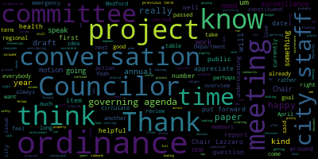
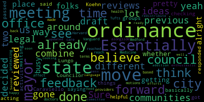
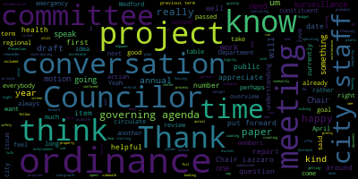
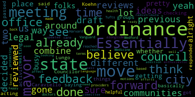

total time: 23.68 minutes
total words: 3304
{kind=link}
total time: 3.59 minutes
total words: 547

total time: 12.1 minutes
total words: 1990

{kind=link}
total time: 1.92 minutes
total words: 281

[Lazzaro]: I'm going to call this meeting to order. And we will do a roll call vote. This is a the February 13 2024 meeting of the Public Health and Community Safety Committee of the Medford City Council. Thank you all so much for being here. Clerk, can you please call the roll?
[Hurtubise]: Absolutely. Councilor Callahan?
[Lazzaro]: Present.
[Hurtubise]: Vice President Collins. Present. Councilor Leming.
[Leming]: Present.
[Hurtubise]: Councilor Tseng. Present. Chair Lazzaro.
[Lazzaro]: Present. Five present, zero absent. This meeting is called to order. So the first item on our agenda is I'm just reviewing our 2024 2025 council governing agenda, which is just all of the papers that we are. We have in this committee. The other thing that is on this agenda is something that I was hoping to discuss today. And I've invited a number of people here to talk about. So I'm hoping to discuss that first, which is the paper 24-023, which is a warming and or cooling center for adults experiencing homelessness in Medford. Then we will get to talking about the governing agenda after we review that if that's okay with everyone. Um, the. Is that all right with the committee members if we talk about the warming center 1st. Just because we have a bunch of guests here. Okay, so I'm just going to read through the resolution 1st, and then we will get to a couple of. folks here to speak. Actually, there was also Councilor Collins had something that she wanted to speak about the wildlife feeding ordinance, which is not officially on the agenda, but we're going to get there as well. So Councilor Collins need not be concerned. So, paper 24-023 warming cooling center for adults experiencing homelessness be it resolved that the Medford City Council By the Medford City Council, let the City of Medford explore the options, cost, and requirements to open a warming and cooling center for adults experiencing homelessness in December 2024. Be it further resolved that the Medford City Council invite representatives from the administration, including the Board of Health, along with stakeholders in our community and in neighboring communities to attend meetings on this topic. I thought we would dive right in and try to do this as quickly as possible. I have some understanding of how long it can take to kind of gear up for something like this because. I've worked with Pastor Jerry Whitestone who is in attendance at the Malden Warming Center for the past few years, and it can take some lead time and in anticipation of trying to get everything together by next winter. I'd like to start talking about it as soon as possible. So, here with us today are Marianne O'Connor, who is one of our representatives from the Medford Board of Health, as well as Penny Funioli and Alicia La Gambina. And Alicia hunt, who is from the planning department who I thought maybe couldn't be here, but maybe since we're on zoom and maybe basketball's canceled is able to be here, which is exciting. But just to give some background on some conversations I've had. I spoke with a woman named Karen from Somerville. Somerville and Revere are two cities in our region that have recently opened warming centers by contracting with a nonprofit called Housing Families. And they are using city buildings to have overnight warming centers during the months of January, February, March. I think they both opened in, oh, Sophie Antoine is also here. Thank you, Penny. Health equity coordinator. Nice to meet you, Sophie. I have not met you in person yet, but thank you for being here as well. So, both of those cities are using their public buildings and are contracting with housing and families, and the woman that I spoke with from Somerville said that she was interested in the possibility of a regional conversation with Medford for future years. I don't think either, I don't think either Revere or Somerville is married to the model that they're using this year. Revere last year used a different location. They used their senior center last year, which is also a city building. They faced a lot of resistance last year, so I think everybody's just kind of feeling their way through. I can also say that the Malden Warming Center did a lot of feeling its way through the first three or four years of its existence. And a lot of the work that you do in this kind of space involves a little bit of trial and error and learning what works and what doesn't in the process. So I would like to invite First, if I can, Pastor Jerry Whetstone to speak just for a couple of minutes about maybe just to give us a little bit of background on the Malden Warming Center, how it started and you can just give us like a couple minutes of description of of what we do at the warming center and where the. uh, this, this sort of being a high level conversation about, like, what the needs are in the region and, and where we came about, uh, where the warming center, um, began and where we are now. Um, then we can sort of start talking about how Medford can fit in that puzzle piece.
[SPEAKER_05]: Right. That's quite a tall order.
[Lazzaro]: Sorry.
[SPEAKER_05]: Good evening everyone. It's nice to meet you and I appreciate the opportunity to come in and encourage you in your exploration of this. Typically, when we find the other cities that I've had the privilege of working with, and I've been working with several of them recently. over the past few years, there's often the question, well, do we even have a problem with those that are experienced homelessness in our community? And the answer to that is yes. You don't always see them. One of the reasons is, is because they're doing very well at hiding sometimes. And other times we don't see them because we're not really looking. We don't really see them because we tend to be busy on our own tasks. But we definitely have that problem in our region. And in our area, Malden was the 1st warming center of its kind ever from what I can understand in our in our region in our area and. The way that it actually got started was we were sitting in a conversation with our mayor, with a group of faith group leaders, and we just said, is there something that the city could use some help on that we might be able to step in and see what we can do? And the first thing that came to his mind was, well, we have a significant number of people that are experiencing homelessness, and we're not sure what to do. Um, that gave dream. I won't go into all the details about it. Uh, but, um. We, uh, I, I approached my own church that I have. I pastor, um, threw out an idea to them and said, would you be willing to host this and give birth to this? And, uh, and then we, we launched it from there. We're in our 6th season. Uh, we Malden warming center actually operates totally by volunteers. Um. It's, uh, our, our budget runs. Some in the vicinity of about 130,000 to 150,000, depending on some of the things that we provide for our guests, which wouldn't necessarily need to be provided by every warming center. We worked closely as she mentioned with with Revere and Somerville, and they use basically our model to get theirs off the ground. The amazing thing is that many people have a misunderstanding of those who are homeless. And what we approach it as is that we are a people who practice hospitality. We're a group of people of compassionate hearts that recognize that there are many people and that number is increasing. I don't think I have to tell you as city officials, especially in the public health, that homelessness is on the rise exponentially right now. And so we're just the people that come together and say, we're going to practice hospitality. We're going to open our place and say, come on in and and, you know, we have a rather extensive program and the fact that we provide dinner as well as breakfast as well as snacks throughout the night. We also have what's known as Amy's closet. So we provide clothing. for those that need it, as well as any warm clothing or personal care items, as well as provide sandwiches and such when they leave in the morning so they can have lunch during the day. But that's just us practicing hospitality. Our pledge to them is to provide for you a warm, safe place for you to be during the harsh New England winter months. We operate December 1 through March 31. That's kind of essentially what Malden Warming Center is all about in a nutshell. And as I mentioned, we do it completely by volunteer. We have a self-signup program to where the volunteers sign up for their own shifts. We have broken down. I've been fortunate to have some exceptional leaders come along and join us in the leadership team so that there's just an amazing group of people. Right now, we have approximately 147 active volunteers that are rotating the various responsibilities and covering the responsibilities. And then there's even times like today, we thought it was going to be a snow emergency and it was at 1st, but as you well know, things kind of changed, but we had planned on remaining open and we just put the word out and said, look, if there's some volunteers that are available. We really don't want our guests to have to be outside during the day and we had people respond. So we were able to be open for the day. The people are there and ready with compassionate hearts to respond. The Revere and Somerville programs, as she mentioned, are actually operated by housing families, which we work and collaborate with closely. And though they use our model, they have paid staff, and they mix in volunteers. So there's a lot of variety and ideas that can work with that. And I'm willing to come alongside and to help any group of people that want to explore it more or find out some of the details to it. and answer any questions you might have. But the key is that those that are experiencing homelessness are people and their constituents. And they don't have an address because they're homeless. And that puts them in a very real difficult position. And so when people say, well, where are they from? Are they from Medford, or from Malden, or are they from Everett? The answer is yes, they are. And some of that happens to be where they are at the moment sometimes. And so we need to band together, because the need is great. So I see a hand raised. So Madam Chairman.
[Lazzaro]: Thank you, Pastor Jerry. I appreciate that. Councilor LeMang.
[Leming]: Yes. Thank you for coming. Can you talk a little bit about the land situation? Who owns the land or the building for the Malden Learning Center? Is it rented out? Is it donated? You said the budget was $130,000 a year.
[SPEAKER_05]: just could you could you just like talk a little bit about the about those sure yeah uh the the the building is actually belongs to the church that i pastor the first church of the nazarene uh and uh we we wanted to collaborate so that uh when it originally started the warming warming center was under the umbrella of the church so that we could get it organized and started our first year budget was was only about about $60,000, I think, $60,000 or $70,000, because we were really just getting started out. The $130,000 covers quite a bit. We provide a shuttle in the morning. As I mentioned, we provide quite a few meals. We also have a relationship with the church that, though the church doesn't charge rent, the warming center does cover Extra utilities that pays a portion of the utilities. So, it basically pays for itself as far as utilities and and any kind of. items that we might need, plastic bags for garbage, those type of things, paper plates, all the stuff that we do for our meals, the warming center provides. Probably some of our largest part of our budget is security. We do allow the people to come because it's a first-come, first-served basis. We have a limitation of 25 individuals that we're able to house. And so they're able to come early and get a number and wait in some tents that we have out in our parking lot until we open our doors at 7. And because of that, we provide security. So that's a huge amount. We also provide blankets. That's a health issue. We don't want anyone to be using their own blankets or their own sleeping bags in the building, because we want to make sure it's a safe place health-wise as well. And so we provide blankets every night, and we get those laundered every night so that they're clean. So some of those are pretty hefty aspects. Some of the other warming centers choose not to do that. They use mats or something, but in our city, they haven't allowed us to go that route as yet. Does that help some?
[Leming]: Yeah, no, absolutely. And where does the $130,000 come from the city or donations?
[SPEAKER_05]: Probably about right now about 42 to 45%. No, not even that hard. Between 40 and 42% of our budget is probably grants. The rest of it comes from personal donations. We have incorporated recently so that we're now our own 501c3 and we do our own fundraising. And so the largest chunk of our budget donations come from personal donations or from organizations or businesses that support us. We do have a local foundation in town that is a tremendous supporter and has been for all 6 years that we've been in operation. So, we raised the budget and pretty much we do use CBDG money that we have a small grant from the city that covers parts of what we do. And also there was some ARPA money this year that they were able to help us with helping to cover some of the security aspects.
[Lazzaro]: Um, there's also the, uh, uh, Malden recovery coaches are, um, they staff, uh, a portion of the night. So they're pretty employees and we'll have like two or three.
[SPEAKER_05]: There's three a night. Yeah, and that's a collaboration. I'm huge on collaboration. So we collaborate with Malden Cares, which is a part of Malden Overcoming Addiction. You may have been familiar with that. You may have met Paul Hammersley. If you met him, you remember him. And so we actually have three recovery coaches on site every single night. We also collaborate with Elliott ABCD Housing. We collaborate with Melrose Wakefield Tufts Hospital. And these collaborations all provide services that we that we can't, but in the collaboration, we're able to provide other resources in the 6 years. And these are going to be rounded off numbers because I didn't write them all down. But in the 6 years, we've been in operation, we've helped probably over. 100 and something people find secure housing through our collaborations. And through our collaboration with Malden Overcoming Addiction and Malden Cares, we probably have somewhere in the vicinity of close to 200 people that have entered recovery programs by being guests at the center, giving them opportunity to work with Malden Cares and such. So those collaborations have been tremendous. But again, the center itself, we practice hospitality. That's what we are about. And we have, just to kind of give you an idea, we have two room monitors on for the 25 people. We kind of figure that's a safe guest to room monitor ratio. So there's two room monitors on all night long when the guests are in the building. And then, of course, we have volunteers that do many other tasks, you know, for the beginning of the night.
[Leming]: And apologies, Chair, I just have one more question, though I don't, I'm not, I don't know, this is a Medford specific thing, so this is just like for later in the meeting of somebody else. What would the candidate locations for Medford be if it were a learning center? like what locations.
[Lazzaro]: If I could ask you, Councilor Leming, to pause on that question and redirect to Marianne O'Connor or Penny Funigalli to ask if you all could give us a little, or actually Alicia Lagumbina as well, if you all would maybe be able to address what I would describe as the needs of Medford residents that you're that you witness in, you know, sort of day-to-day interactions now and sort of what you generally tell them when you do refer people who are struggling with housing instability or eviction, things like that in the winter.
[Funaiole]: I think Alicia would best speak to that.
[SPEAKER_03]: Hi, everybody, Alicia here, community social worker for the city of Medford. So, I've been working in this capacity for some years, and I have volunteered only once at the. warming center in Malden with a couple of folks from our recovery coach program here. A little bit for our new Councilors. Hi, haven't been on a council meeting with you yet, but I'm sure many more. So we work with individuals who are in recovery from substance use disorder or are currently using substances. Those who are unhoused, those who are Facing eviction and so there are certainly different levels to the folks that we're working with. I would say that our main concern, our main issue with the folks that we are working with is eviction in housing. unable to pay rent, low income housing, affordable housing. So we are getting a majority of folks at that preventative state where they could be in a home and yet they are losing their homes. And thus far, leaving the community, becoming homeless, living in unlivable spaces, I will say that we do have a fairly small presence of people who are living outdoors in Medford. We did have a good grasp on folks in our previous years with our recovery coach previous to this one who was funded through the city. And we would do that street outreach and go to locations and engage with folks. We haven't had that capacity in some time, but we do know that a lot of folks have moved from spaces that they previously were in, and that's due to some of the construction beside the river. And community members will utilize really any sort of communication measure to communicate that there are unhoused folks in the city of Bedford. So we've gotten emails to the mayor, see, click, fix. Patrons of the library have had a lot of concerns. The library is such an open and welcoming space to all and they're really supporting this population. So I've taken up hours on Wednesdays at the library to try to engage with folks in that space. So really, another important thing to note is that it's a transient population. These folks, like Jerry said, and I'm so glad, Pastor Wetzel, I'm so glad that he did. This is a transient group. These are not people that attended Medford High. Mainly, these are folks coming from different communities. older adults, living with family members, taking showers at family members' houses, but then living outdoors. So we do see a very variety of those who had roots in Medford prior to becoming homeless and those who just found themselves here. But if there's any other direct questions about those that we serve in Medford and have been working with, the Behavioral Health Commission has been really great with some of our services and really allocating or hopefully allocating some future funding like dinner is provided and we have We have hygiene kits that we give out to folks. We have MBTA passes and target gift cards for a number of like necessities, workforce gear. And so we really tried to give as many resources as we can outside of actually giving folks housing.
[Lazzaro]: Dennis anything? Councilor Collins.
[Collins]: Thank you. I appreciate that and I just wanted to jump in ahead of any other city staff who are going to speak and just say you know I really appreciate that overview and I think it's, it's certainly abundantly clear to me as one Councilor all the time and I feel pretty safe and speaking for my fellow Councilors that the health department, the Office of Prevention and Outreach, everybody involved in this type of preventative and supportive work in City Hall, just always doing such an incredible job with the resources that they have. I'm kind of always in awe of it, and I really appreciate it. It's always a good time to get an overview of what is currently on offer, so I just really appreciate that. And Pastor Jerry as well, it's incredible to hear about the work that you and your congregation have done for years in Malden, and I think You know the theme that's come up and kind of the testimony that we've heard so far that I suspect we'll hear over and over again for as long as we talk about this topic and future meetings is that, you know, just like we say that the housing crisis is a regional issue. So, so too is the homelessness issue. And so I think it's really I think that really is at the heart of it to think about and how this plays out across a blurry line, across our various municipal boundaries. But at the end of the day, we have to think about regional capacity and how we're contributing to that. So thank you so much. Looking forward to hearing more perspectives on this.
[Lazzaro]: Yeah, I would definitely agree with that. And I can also say that in my experience in Malden, Everybody who's at the Malden Warming Center definitely didn't go to Malden High, but a lot of them did. And sometimes they know one of our volunteers who was a longtime high school principal at Malden High, and sometimes they know each other from when they went to high school. But I also spoke with one of our guests. I was there. I did check in last night. And he went to Medford High, and he was telling me about his house that he grew up in, that it was his parents' house. where it was located, like across the street from St. Clement's and what color it used to be and what color it is now. And, you know, he had roots in Medford. And, you know, it's like, well, he's in Malden now because that's where the warming center is. So, you know, you kind of wherever you grow up, you go to the place where the services are available. So, you know, it's it's the responsibility and the duty of everybody in the region to be kind of working together and making sure that we're all doing the best we can for the people that are around us. And I wonder if, Marianne, if you might be able to speak to maybe a conversation that you had with Somerville about the possibility of a regional discussion. None of this is really going to end up with us making any concrete Um, decisions tonight, but I am hoping for us to, like, begin a conversation and really, um, maybe hopefully, uh, I think the next step will be like a more solid, uh. I think the next conversation will be about what kind of space we might need or have access to, but, um.
[MaryAnn O'Connor]: Yes, thank you very much. Council is very nice to meet you. And same with you council. Um. So yeah, that was kind of the juxtaposition of the conversation we had last week. We met with Somerville, Cambridge, Arlington, and Medford, and the Somerville Homeless Coalition. Folks were on the call as well, who worked very closely. So Karen, who you spoke with, Karen Carroll, she's the Director of Health and Human Services for Somerville. And we did start the conversation as a coalition, thinking on a regional level, It might make a lot more sense for us to put our heads together, find locations, because space is an issue in Medford, and I know we'll get into that. But really, as we kept going forward, so some of those shelter right now is ARPA funded. So they're going to be facing the same ARPA cliff we're all facing next. Winter, they're not sure how they're going to continue to fund. They are probably close to 200,000 dollars with housing families as far as the budget goes. But, you know, the conversation was just said, okay, we need further conversations and let's start. Maybe there's something we can do. You know, some low hanging fruit, something smaller, we can get going before we start to launch into this greater conversation of a regional. Um, center, um. only because doing things regionally now, specifically with the state, DBH, it's a lot easier to get funding as opposed to individual communities. So if we work as a region, we may actually be able to tap into funding if available. And we have a lot stronger of a case as a region. But yeah, it's a big issue. Obviously, Cambridge and Somerville have different issues than Arlington versus Medford. We're all trying to figure out what's the extent of the problem and who we're going to serve. But we all came to the same, like you all said, this is a transient population. So people from Medford will go to Somerville, people from Somerville will go to Cambridge, people from Cambridge will go to Medford, and they will move around as they can. It was the start of a conversation, no solid answers came out of it, but certainly something that we want to continue to talk about and see where we can collaborate and hopefully come up with some funding. Space is an issue, so where the location would be is something we're looking at. But the funding is certainly going to be an issue as well.
[Lazzaro]: It sounds like running out of ARPA funding is going to be a problem for everybody, everywhere, in a lot of ways. So that's going to be something to keep in mind. I'm really happy to hear about the concept of state funding being more available for regional projects, though. That sounds like a really good idea. And another thing to keep in mind is that definitely if people find out that something is one town over, but it's available and you don't have to show paperwork, that makes sure that you have a connection. I do know that there was a shelter in Cambridge that established a new rule at some point. We had a guest last year who was trying to get a little bit more of a solid. situation, Pastor Jerry, I'm not sure if you remember this, I think it was Mike, he was trying to get into one of the Cambridge shelters, but you needed like some kind of piece of mail that said that you lived in Cambridge. And it was like, but you're homeless. How do you have a piece of mail that says you live in Cambridge when you don't have a home? And it was like, he couldn't. So it was like, you were supposed to prove residency, but you don't have residency anyway. But then it was like, well, I'll go to Cambridge. It's like I would happily go to Cambridge. Anyway, Councilor Leming.
[Leming]: Thank you. So two questions, just about what Marianne said. So with the regional funding issue, I mean, does that, sorry if I misunderstood sort of what you were saying there. Would that imply that if warming centers were like band together and apply for like a block grant in that model, they'd be more likely to get funding? So that's just like my first question, like try to understand that situation. And the second is, I mean, is it possible that Medford has less of a homeless situation than some of the surrounding communities because we just lack resources compared to those communities for the homeless? So we're sort of just like, putting the problem off to our neighbors.
[MaryAnn O'Connor]: I think it's part of that. We have different issues here in Medford as well, though. It's not just folks on the street being homeless. We have folks who we know are doubling and tripling up in apartments, are couch surfing, are living in cars. So they may not be on the street necessarily, but they're homeless. So that's one thing. I think we're seeing more and more of that, and the schools will attest to that. So that's a problem. But as far as the regional funding goes, it's kind of the way they're going with the state and DPH and everyone else. They're really looking at regional approaches now, and they'd much prefer to fund regional approaches as opposed to individual communities trying to solve problems on their own. They're looking for folks to band together, and they're much more supportive of regional coalitions and regional collaboration.
[Leming]: I guess I was just asking if there's a future possibility with that in mind, or if this is already a thing, like having all the warming centers and greater Boston sort of apply as a group and split the funding, or is that not a thing?
[MaryAnn O'Connor]: Not yet. I don't know. I mean, not to say that there's actually even funding out there right now for warming centers that we're aware of. It's just to say that if there were, and we collaborated as a region, we'd be more successful than if we tried to do it individually as Medford.
[Leming]: I remember I had a conversation with Nisha over a year ago where she was talking about some of these regional funding issues. But it's interesting to see how it evolves over time.
[Lazzaro]: Pastor Jerry.
[SPEAKER_05]: Yes, thank you madam chair. I know I'm a guest, but just to throw out something 1 is the regional aspect yesterday. I think it was yesterday. I was pleased to be invited and participated in the ribbon cutting for the CHA behavioral health clinic that's now in Malden. And that's a perfect example of some of the things that's happening on the mental health area. Whether you realize it or not, the number one reason for homelessness, the cause of homelessness is mental health. And then that could be dual diagnosis with substance abuse disorder. And then we move into the evictions and such as that. And we could share personal stories that we've met and worked with in our warming center. But that's just one of those regionals. They actually worked to get regional care and went for some state money and able to do that. That's one of the reasons they were able to do that, and they're doing it in other areas as well. I do want to throw out a name to you. If you haven't met him yet, Alex Prax is our Director here in Malden, our Director of Community Development and Housing. And he's the 1 that's helped us tremendously. To know where some of the money is and how we might be able to tap into that money and he actually. Our mayor actually invited mayors of the surrounding cities to come and we've met a couple of times and he was very instrumental in talking about some of this potential regionalization and how there was money available. And so I just. Which say to to your chairperson Councilor zero, you might want to. Connect with him and have him at 1 of your meetings, because he definitely knows the ropes when it comes to some of that and especially with some of the as well as other things that can be tapped in for some of for some of those aspects. And then the third thing I just wanted to throw out too, the collaboration that we have is just tremendous. And one of the collaborations we have is with the city. When we began, the very first thing that I did was bring all the city officials that would come and sit down with us and say, this is what I'm thinking about doing. What can we do and what can't we do? And how can we best partner with the city to help individuals that are experiencing homelessness? And that partnership has just Grown exponentially. Our mayor is 1 of our volunteers. We have 4 council members that volunteer. Some of those are on a very regular basis. There's 2 of our council members that every single Friday night for 4 years. Now, they do dinner. They bring in dinner and serve dinner to our guests. And so our city council has been very supportive, and so that collaboration is very important. And I believe that there are probably some faith groups, so when you begin looking at locations, I would suggest that you might just want to start reaching out to other individuals to say, would you be willing to partner with the city? I'd like to think that every church would open their doors to you. I can't say that. That's a heartbreak of mine. That's a little story another time. But I do know that it's been a wonderful partnership that we've had and working together. And so that you just don't look to cities, to city buildings, because that's going to limit you to start with, I know. But there are those in the community that might say, we can come alongside of a project like that. So that's it. I'll be quiet. Thank you, Chairman.
[Lazzaro]: Yes, Penny.
[Funaiole]: Hi, thank you for having me here. And I want to thank Alicia and Maryam for all they've they've added the conversation extremely knowledgeable and have been doing hard work. But I do want to point out that. Mayor Breonna Lunger-Kern and Sophie Antoine and I did attend the meeting at the Malden Warming Center last fall. And following that meeting, the mayor did reach out to our faith leaders and to other contacts and was looking for support. And she did not get anyone who was biting to come and help and be a part of this conversation. But I think really the bigger issue I think is It's not just each town's individual CDBG funds we need to be thinking about. What is the continuum of care? which is the larger regional system that's, and Alicia can speak to that far deeper than I can, but you know, they do the point in time homeless count. They are our contact for this work. This is a systematic issue. This is an issue that Boston's just been taking on for the last 50 years probably for all of our communities. And they've started to say no thank you and started to take care of their own. And so we should be working collaboratively. We should be working with our state reps. You should be working with your fellow Councilors across other cities and towns to create a systematic change where we service the people in this area. We've been fighting for the opioid epidemic for the last 13 years. And what was the main point? There is no services in this area is desert service area for people who need help. So at that time, the conversation was, what's Medford going to do about this thing? And the reality is, what is Middlesex County going to do about this issue? And so I think that every other state in America operates on a county system, not Massachusetts. 351 fiefdoms, that's how it works around here. So we need to be thinking much broader. We should be, you know, making some sort of like, you know, sector advocates for our county, which is one of the largest counties out there. But there's no president of Middlesex County, but there's a D.A. and there's a sheriff. Right. And then there is the continuum of care that's servicing the area in terms of homelessness and housing. So I think that we need to think a little bit bigger. But I also think that we want to do the one thing that you're doing that's so critical is you're providing dignified place to be. And that's the starting point for true change for an individual is to be treated like a human, to be treated well, and to be respected. And then you can see them grow. And I think that can't be necessarily done necessarily on a larger regional level. If we all fight for that, maybe you can.
[Lazzaro]: Yeah, I would agree with you. I've thought about that as a bigger picture thing. And the issue with the warming center, from my perspective, is that it catches folks right before they hit the pavement as a final. uh last gasp so it's it's definitely not the safety net that everybody deserves but it can be the last catch um of course we also need all the layers of safety net um but the the least we can do is make sure that you're not freezing to death so as a first as a first thing that's kind of That's kind of the first thing I'm thinking. And then we can start working on, you know, the Office of Housing Stability and making sure that we have like a fully staffed city hall that's that's like checking in on people and that, you know, you never end up getting evicted in the wintertime and having to go to a warming center. Maybe then we don't need a warming center like Pastor Jerry and I talk about sometimes where it's like, hey, maybe we just like make ourselves obsolete. So then we wouldn't even need to exist. Alicia Hahn, I'd love to hear your perspective.
[Alicia Hunt]: Sure. Thanks. Yeah. And thanks to the storm, my sentence event this evening got canceled. So the, I think that it's also helpful to know, I feel like the newer Councilors may not have as much information about what are some of the systems that we have in place, but some of the systems that need to be a little bit more robust. People have mentioned CDBG a few times. It's a community development block grant, and that's managed out of my office. So twice a year, we have public hearings where we ask the public, we ask public service agencies, et cetera, to tell us what are the needs in Medford. Reality is we don't get a lot of feedback, but we have used those to be able to change some of the stuff. We get through CDBG, we are allowed to use 15% of the funding we get for public service agencies. Prior to Mayor Brianna taking office and me being in this role, there was a very small group of public service agencies that always got the same amount of money every year, and other agencies were discouraged from applying because they wanted to not have to ever say no to anybody. We've kind of opened that up, and I've been working with Penny and Alicia and Marianne, and now Sophie, to really open up, like, what are our needs? What should we actually be funding with this money? We don't have, like, a public service plan. Like, we might have a housing production plan, right? but we don't have a plan. We haven't done like a needs assessment, although Penny's done some work in this area about needs. But usually when we get funded for a needs assessment, it's for a target area, a target group, or a target issue, and not just in general, what are the public service needs? We've started trying to ask that question. And so then when we did start to get more applications in, I asked the public service agencies to talk with this team. in advance of applying and then I sat down with this team last year because last year we got $451,000 of asks for that money and we only had $215,000 to give out, right? So we had to say no to half. of what had been asked for. And I just wanted to give you that. When you talk about the Malden Warming Center having a budget of $150,000 a year, just in context, we get for the city public service funding from the federal government $215,000 a year to give out. And that number is not going up. We're in danger of Congress cutting that number. It's not the only number we ever get. There have been other funds that have come in for nonprofits. But in the past, the city has kind of said, OK, it's open. Nonprofits can apply. And the PTOs and the friends of this and everybody sort of competes. And for the small pot of money, usually when that has occurred, it's been about $100,000. Like the Gaming Commission has been a source of this. but that could be targeted to areas of high need if that was sort of the preference of the city. But often those, so those funds and CDBG have a very strong preference, if not a requirement, for being Medford-based. CDBG does have the ability. So like we were giving money to Bread of Life based in Malden to help feed Medford residents. But we realized that we were giving them $2,500, $2,500, that it was five, it was something on the order of 5% of their budget or less. It may have been less than that. And they were serving 5% of their population they had identified as being Medford residents. So we kind of said, maybe that money could be more effectively used for something else. But these are the kinds of questions. So I just want to let you know that these meetings are gonna come up. We usually do one of our public hearings at a city council committee of the whole. We usually have our nonprofits who have applied present to the city councilors and ask the city councilors to weigh in on that. But it's a really hard thing to do and we don't have enough money to go around. On the, I just want to quickly touch on locations on the city has been working really hard to find a location, a building where we could have a result resiliency hub right it's hard, there are not available properties in Medford, and I won't really get into that right now, but we've also been trying really hard to get more. afterschool programs and daycares in the Medford, you might find that a lot of our churches are already running daycares and afterschool programs. And the one person I'd talked to about this idea had sort of mentioned that there was an incompatibility with the space, like you couldn't use it for a daycare in the daytime and a warming center at night because of the timing and the turnover. and the difficulty with that. I've never worked in either, so I can't argue that, but that is one of the issues, and we're actually trying to get more of our churches to host daycare programs and afterschool programs. My office has been working to play matchmaker. I don't know why my office, but we have between daycare programs that are interested to come to Medford and churches that may have spaces for them. So I'll just leave it at that.
[Lazzaro]: Jerry and I were just laughing because the building that hosts the Worming Center in Malden is also a daycare during the day. So we're familiar with that juggle and it's been challenging. And also that my kids go to an after school program that is also a daycare and is in a church. So it is also a functioning church. And one of the people that goes to that church is the kitchen coordinator for the Malden Warming Center. We have many, we got our fingers in all the little pots.
[Alicia Hunt]: Your children must be at the daycare run at the church that I'm a member of.
[Lazzaro]: It's a grace church.
[Alicia Hunt]: Yeah.
[Lazzaro]: And they're like not everything's falling apart over there. So, you know, it's like an absolute crisis everywhere. Daycare is a big challenge. So it's another conversation for another probably city council meeting if I have anything to say about it. Councilor Leming.
[Leming]: Sorry, just a minor part. Are the requirements for a daycare and a warming center in terms of the physical space similar? So if something's eligible to be a daycare, is it basically eligible to be a potential warming center?
[Lazzaro]: Honestly, probably. The requirements for a warming center are really pretty minimal. It doesn't, like the Malden Warming Center is probably more, it does more than it needs to because there's a full kitchen, but it just needs to be like a big room.
[Leming]: Yeah, well, I'm just asking because, I mean, potentially if, like, you know, if Alicia's office approached a church at one time and just found that they couldn't be a daycare for some reason, then potentially you could go back, you could, like, circle back to them and be like, hey, would you maybe want to be a warming center? Anyway, that's just a thought popped into my head.
[Lazzaro]: I appreciate that. I want to go to Alicia Lagumbina and then I want to stop because if I keep talking about this, I could talk about this for a very long time. So I want to move on to one thing that Councilor Collins wanted to take off the table from the agenda. So Alicia Lagumbina and then I'm going to try to move on from this discussion and wrap it up. But yes, Alicia Lagumbina.
[SPEAKER_03]: Hi, I did want to highlight something that happened last winter, and that was that our folks that we were working with were well informed of the warming centers, our ability to transport them, and they were unwilling to seek shelter or have an overnight stay outside of their encampment. And they were very concerned about their belongings being tampered with. And so what happened last year was that we had a lot of people using illegal like heating systems. And so we had folks starting outdoor fires, which obviously, you know, you can't do. And then we did have a fatality behind National Grid of somebody who used a built heating system. So so folks are pretty serious about in our experience with last winter, because I would go home and think about people and be texting them these lists. And they're like, we're fine. And I'm like, how could they be fine? And the thought of someone taking everything that you belong and trying to get to one of these centers It wasn't something that we experienced people doing last year. With that being said, the City of Medford historically has opened warming and cooling centers at multiple places throughout the City of Medford. Obviously, office hours, we have the senior center, the library. The only overnight one, which probably isn't the most favorable to folks, is the police station. That is always an option. And if you have spoken with any of our officers, they've had people in the lobby overnight. and they are able to transport as well as I believe historically our EMTs were going to be able to transport folks. And then our two biggest homeless agencies that advocate for folks are housing families and ABCD and so last year we teamed up with PDS to make sure that they were funded so that folks weren't like, well, where are these agencies that are supposed to help? And they aren't based in Medford. So it's actually our contribution to these agencies that give them the ability to serve Medford, not these are the agencies they should serve Medford. And so last year, we did a really good job, we as in PDS did a really good job of giving a lot more money to the agencies that we suggested and are the most highly utilized. With that being said, ARPA is no longer a thing, you know, having people fill out applications with their circumstances due to COVID really isn't accessible to people and So those are the experiences that we've had. But we do have an outreach team through ABCD that got more funding this year, had no very minimal funding last year. And we also have Elliott Path, which is the co-occurring mental health and homelessness agency that's supposed to serve this area. But the applications are so tough that most people aren't eligible for most things. So while I have you here, I just want to give you some real-time information. The point in time count, which counts those who are on house once a year, that happened and I'm not sure that we have historically been a part of that, as we don't have those resources here. It's unclear whether those who are in shelter with the last address in Medford are being counted or whatnot, but historically we haven't had any numbers to support us getting this kind of funding and whatnot, despite our own data that we've been collecting. And Penny said in the chat also that anyone who is Excuse me. Anyone who's a part of our recovery coach program and is in our recovery readiness program, they are able to receive a scholarship of up to, you know, two to three months of recovery home scholarship. So we have emergency shelter, what we call the emergency shelter funding for folks who are in recovery and looking to get into recovery houses. And that's one of the things that we have been working on. with our people.
[Lazzaro]: Awesome. Okay, thank you so much.
[Leming]: Sorry, where are the communities that were using illegal, where physically were they, that were using illegal heating systems?
[Lazzaro]: Sorry, Councilor Lohmann, can you repeat that question?
[Leming]: I was just asking Alicia where physically the communities that were using illegal eating systems were that refused to go into shelters.
[SPEAKER_03]: So we did a lot of mapping and honestly, it's it's hearsay, right? So we have the police department will tell us we have people still with the C click fix, which I think is just different so we'll get see quick fix there is a homeless encampment here so you're looking on the you're looking mainly like where Wellington station is that whole line of where the train tracks are into Malden you're looking anywhere under I-93 you're looking at certain parks that people will stay at overnight and you'll see their belongings. We're less talking about folks who are the folks at the Wellington train station who are kind of we think that people come here. I don't know what the technical name of it is. those looking for money from cars that are driving by. But we had had reports of people in that forestry in the target side of that area as well. But there has been a lot of construction on the riverway. So that's kind of disrupt where we know and have visited folks who are living in tents. And then there was that tent that popped up. in West Bedford on the median. So yeah, so we did have a map and we were tracking and we were outreaching, but we just we don't have the capacity. We don't have the funded positions to do.
[Funaiole]: And I'd also like to point out that it's not in the Office of Prevention's best interest to put on a public meeting where people are located in great detail, because it's our job to build relationships with them and to support them. So we don't want to put that kind of stuff in a public meeting, but we're happy to discuss general areas, which Alicia did. But I just want to make sure that that's very clear that we're here to support these people to get help and not draw eyes towards them.
[SPEAKER_03]: Thank you before I send anything too specific and honestly our ATMs are places where folks will find solace.
[Lazzaro]: Thank you all so much for giving us so much of your time and sort of an overview of our situation. I think there's a lot more to say. I think the Board of Health and the Planning Department does so much excellent work. And I really, really appreciate your partnership as we began talking about this. I just think it's something that's very important to me. It's something that I'm probably going to harp on about for quite a while. So I apologize in advance for everybody to everybody forever. But I think it's very, I think. Very important. I really appreciate everything that you do. And I really thank you for being here. And I hope that we can continue the conversation and make some progress. And Councilor Collins.
[Collins]: Oh, sorry, my headset was still muted, even though my computer was not. Thank you, Chair Lazzaro. I second everything that you said. I echo everything you said. Thank you so much to all of our members of city staff for being here for tonight and for really grounding the beginning of this conversation in your years of experience and expertise in helping us frame this conversation that prioritizes contributing material benefit to these neighbors and framing this conversation in dignity for everybody that this serves to touch dignity and safety. And I'm sure this will be the first of, I hope, many meetings and conversations about this project. It sounded like we were trying to wrap this up for now because it's getting late. So I would put forward a motion to keep this paper in committee. And I know Chair Lazari did note I do have a paper that I'd love to take off the table if we have time for tonight, but I know that we have another action item to review the governing agenda, so I would be happy for us to proceed to that first.
[Lazzaro]: So I know that Councilor Collins has prepared some materials for taking something off of the table for tonight. Councilor Collins, would you prefer to wait since it's already 8.15-ish or would you rather, would you like to wait or do you want to do it tonight?
[Collins]: Thank you for the question, Chair Lazzaro. If we are going to continue and try to get through the second action discussion item for this meeting during this meeting, which is going over the governing agenda. The ordinance that I was hoping to take off the table is included in the governing agenda because it was assigned a paper number last term. I might see if my fellow Councilors would entertain a motion on it if we get to it during that section of the agenda, instead of taking it off the table as a separate paper. I'm seeing confused looks. I feel confused. Okay, so, um.
[Lazzaro]: All right, let me so on the motion. Is there a 2nd on Councilor Collins motion to keep this paper in committee?
[Leming]: 2nd.
[Lazzaro]: On the motion of Councilor Collins to keep paper 240-010, I'm tired, it's been a long day. On the motion of Councilor Collins to keep paper 24-023 in committee, seconded by Councilor Leming. Mr. Clerk, please call the roll. Mr. Clerk, can you please call the roll?
[Hurtubise]: Councilor Callahan. Yes. Vice President Collins.
[Lazzaro]: Yes.
[Hurtubise]: Councilor Leming. Yes. Councilor Tseng. Yes. Chair Lazzaro.
[Lazzaro]: Yes. Motion passes. So next, would we, okay, let's, I would like to, yeah, let's, okay. Okay, great. Yeah, let's go over the Council Governing Agenda. Paper 24-006, offered by President Bears, resolution that each Council Committee review the 2024-2025 Council Governing Agenda as amended in the committee of the whole meeting. Okay, so we have a number of papers in committee, including One significant resolution to draft a wildlife feeding ordinance. If we would like to discuss that, do we want to go through the other papers first, or do we want to just jump straight to that, Councilor Collins?
[Collins]: Chair Lazzaro, thank you. I defer to you. I am pulling up the draft governing agenda right now just to look at.
[Lazzaro]: There are a number of sort of complicated ordinances. So there's the replication ban ordinance, face surveillance ban ordinance. There's one that actually that I know that we will not be addressing until April, the, uh, Medford police department. Um, oh, that's not even in here. Um. It's not even in here, so never mind if I may.
[Collins]: Yes. Um, just to offer suggestion, which, you know, um, as chair, I completely leave it up to you. What do you like to do with the remainder of our meeting? And if we, if we'd like to set a goal end time, I think that would be. Um, fine as well, but I know a number of the projects that are in the governing agenda under public health and community safety committee, and I'd be happy to share my screen if that's helpful. Um, a number of these. Are new as of this term on a number of them were proposed in the previous term. So, depending on how we want to spend the remainder of our time, I'd be happy to, um, assist with kind of quickly running through. that list of projects to provide a general overview and perhaps the timelines.
[Lazzaro]: Yeah, that would be great. I would be happy to, probably best to discuss the new ones quickly if we'd like, and then maybe decide what the timeline would be for probably as many as we can. Yeah, Councilor Collins, that would be great. Actually, before we do that, though, yes, Councilor Leming?
[Leming]: I was just asking if we could, Chair, if we'd be able to screen share the governing agenda, if one of us has it.
[Collins]: I have it up, Chair Lazzaro.
[Lazzaro]: Yes, yeah. Do I need to make you something?
[Collins]: No, I think we're all co-hosts.
[Lazzaro]: Okay, great. Yeah, you can screen share.
[Collins]: All right, is my screen viewable?
[MaryAnn O'Connor]: Yes.
[Collins]: I'm happy to talk through any of these projects, if that would be helpful. One's from the previous term, myself or Councilor Tseng. But Councilor Lazzaro, I'll wait for your direction on which would be helpful. I don't want to grab the steering wheel more than I already have.
[Lazzaro]: Um, no, that would be great. Uh, I appreciate it. Sorry. Um, I mean, full disclosure here. I really was very focused on the warming center, um, discussion. And, um, so I'm happy for anybody else to take the steering. Um, but, uh, but yes. Um, yeah. So let's, let's dive in. So the focus of the public health and community safety committee, um, is emergency response, public health. Inspectional Services and Animal Control. The departments that are relevant are Health, Police, Fire, Building, DPW, and Civil Defense, so it does encompass a lot of significant departments in the city. Relevant City Ordinances being Chapter 6, Animals. Chapter 10, Buildings and Building Regulations. Chapter 22, Civil Emergencies. Chapter 34, Emergency Services. Chapter 42, Fire Prevention and Protection. Chapter 46, Floods. Chapter 54, Law Enforcement. And Chapter 58, Offenses. And Relevant City Regulations, Board of Health Rules and Regulations. Um, uh, Councilor Callahan has to take off and that is fine. Thank you so much for being here. Councilor Callahan. Um, major projects now we just discussed the warming center. Paper 24-023. And the goal of that is to start talking about it as soon as possible and for it to pilot during next quarter. So we just talked about that for an hour. We're going to not talk about it anymore. OK, so alternative emergency response and civil. Sorry, can you scroll down slightly? Oversight, is that what it says?
[Collins]: Yeah, I'd be happy to speak to as I've probably spent, second only to President Bears, I've probably spent the most time staring at this document of the Councilors assembled in assisting compiling ideas from from all of from all of the Councilors, you and I included. So I'm happy to speak to this is one that I submitted and just quickly run through some of the others. Eternity emergency response slash civilian oversight, being a topic that has been brought up to myself as one Councilor by constituents many times. Kind of I know that we're kind of broadly having a conversation about where these projects will occur. Over the course of the two years. So this one we have a goal date of starting not immediately perhaps beginning this conversation in July. perhaps with the conversation that we were just having, the hypothetical proposed warming center, ideally a regional collaboration, something that we're starting to do in Medford, and also I think dovetails with the resiliency hub work that several of our city staff were just talking about when we were talking about this need to kind of plug some of our social service needs here in Medford. So I'm interested to see how this this item on the governing agenda evolves as our conversation about the warming center evolves.
[Lazzaro]: Wonderful. Thank you.
[Collins]: I'm happy to speak to any of the ordinances briefly, if helpful.
[Lazzaro]: Yes, well, this section is just about a half dozen. Yes, we already covered the plant medicine decriminalization ordinance because we passed it on Tuesday. Right, Councilor Leming, would you like to speak to that?
[Leming]: Well, it bugs me because it's not an ordinance. The resolution. Yes. But I did submit that as an ordinance. So that is my language. I'll make sure that it's updated. OK. OK. So I just want to put that out there. Thank you.
[Lazzaro]: We have the overgrowth ordinance, which I believe was tabled at the last meeting but do we want to talk individual ordinances here or just kind of summarize, we can talk about individual ordinances Councilor Collins do you want to jump in on this one.
[Collins]: Thank you. Yeah, the overgrowth ordinance was born out of conversations I've had with constituents and staff about the need to empower city staff to do enforcement around essentially when vegetation on private property is grown so long that it is obstructing the public way. For example, a hedge or, you know, plants in somebody's yard that are so overgrown that they're spilling into the sidewalk and people can't walk in the sidewalk. They have to cross the street. They have to push their stroller in the street, et cetera, just to give city staff the ability to enforce around that because currently they don't. So that should be fairly straightforward. That's the idea there. Similarly, paper 23-449 is, again, about giving city staff the authority to do enforcement around you know, not around activities when they become problematic. Similar to the overgrowth ordinance, it's not about policing everybody for your plants must be about a certain height. It's if something is happening to such an extent that it's becoming a problem, we should be able to do something about that. With the wildlife feeding ordinance, this is a measure that would empower city officials to issue warnings or tickets if persistent wildlife feeding is really creating nuisances or health hazards on private property. So after we run through the governing agenda I might put forward a motion to authorize myself as ordinance sponsor to circulate a draft ordinance to the members of this committee and city staff for comment ahead of this next committee meeting. After that regulating the retail reading facilities. There is no draft for this yet, this has come out of another, this has also come out of constituent request for this regulation.
[Lazzaro]: Okay, Councilor Tseng, would you like to speak to the gender affirming care and reproductive health care protection ordinances?
[Tseng]: Sure, yeah. So essentially, at a previous meeting, we, I think, decided to combine this ordinance, or these two different ordinance ideas, because a lot of communities around us have done it that way, and their ordinances have gone through legal reviews. Essentially, we have a draft that we reviewed already. I think it's in a place where folks are pretty alright with it. We only didn't move forward on it because we were busy getting feedback from the mayor's office about whether we had basically checking with Mayor Lungo-Koehn to see if we had already passed an ordinance like this, which then Councilor Caraviello said we did, but the mayor's office responded to the council saying that we didn't, so we should move forward on it. We were also at that time waiting to see what the state had done on it, because the state was acting on things at the same time. Essentially, the feedback that we got from activist groups was that that it would be helpful for the city to move alongside the state on it. I also reached out based on motions that made at that meeting to health care providers in Medford because this would affect them in terms of protecting their doctors. I believe Harvard Vanguard did not reach back, but Tufts Medicine did. And we had a few meetings on it. They were very, very enthusiastic about it, very happy that this city council is looking to pass an ordinance in addition to state efforts as well. And so I believe we can be ready to move on it soon. I just need to redistribute some updated ordinance language to this committee.
[Lazzaro]: Wonderful. OK. Um, okay, uh, oversight and engagement. We have surveillance ordinance reporting, uh, Councilor Collins.
[Collins]: Thank you. A ordinance that we passed in 2023, the community control over surveillance. over public surveillance ordinance requires the annual submission of reports from the city agencies that employ surveillance technology about those uses. So this is just an annual procedure of meeting with the agency that submit those reports and discussing them, fielding questions from Councilors in the public, is something that, per the language of the ordinance, belongs with this committee. So as the chair is aware, we have already scheduled the first meeting to go over an annual surveillance report for this committee's April meeting, which I am myself very much looking forward to, to go over Medford Police Department's annual surveillance report, which should only include the use of body-worn cameras for the part of the year leading up to March 2024. And that process will be ongoing on an annual basis. This is another sort of maintenance project that has to do with an ordinance passed in the previous term. As far as my understanding goes, the implementation process for the Housing Stability Notification Ordinance, which was also passed in 2023, I believe is still being worked on by partners in the Planning Department, the Board of Health, the Office of Outreach and Prevention. Getting the word out about this ordinance was, you know, no small feat to tenants and landlords alike. So this project would be to follow up with those partners in how broadcasting the news of this ordinance is going, how upkeep, how uptake is going, and how we can enforce that this ordinance is known about and being followed. And so this has a goal start date of April. I know our April meeting date, as we just said, is already pretty full. So maybe the chair and I can work on scheduling an appropriate date to schedule a meeting to begin to take up this project as well.
[Lazzaro]: I do appreciate lofty goals, though. I always appreciate big goals. Just a comment from HSNO got slowed down when we had legal review it and there were conflicts in the language. Emergency response equipment. Sorry, HSNO, I'm not sure what that refers to. Director Hunt, would you like to speak on that?
[Alicia Hunt]: The housing stability notification ordinance. Got you. We thought we had a finished thing and we decided that we should have the lawyers just look at it. And they wanted us to make the language much less understandable by the general public. And so we've been trying to rectify their requests and recommendations with our use of simple, clear language. So that kind of that and turn over a gap in staffing in our office from the person who was heading it up also impacted it. But it should be just about ready to go. And your your body asking for stuff like that actually kind of when bumps it up on the priority list. Right. As opposed to like, well, we'll get to it, but we, you know.
[Lazzaro]: Nice. Well, we appreciate being able to move things along in that manner. Excellent, that's good to know. So maybe we'll keep, maybe we'll keep April, but maybe, maybe May. Councilor Collins and I will discuss. Emergency response equipment replacement with the lead Councilor TBD. Would anybody have an interest in describing that? No takers. All right, I'm just going to read through it. Lead Councilor, it's TBD. Timeline, not a start until January 2025. Review capital plan for funding replacement of equipment for emergency responders. It's pretty self-explanatory and something to take up next year. Councilor Leming?
[Leming]: Would that require knowing what the budget is?
[Lazzaro]: Probably, I would think so. Yeah. Um, but also, you know, the budget will most likely be in flux and different at that point. So it'll probably be something that we'll be able to better assess closer to. 2025 trailers are.
[Collins]: Yes, it's my understanding and again, this, of course, the, uh, the parameters of this project would be. put forward by the Councilor that's leading on it, and it's currently listed as no Councilor owning this project. It's just put forward as a good idea. So I don't want to speak for whoever leads on this project and their priorities, but it's my understanding that rather than fitting, rather than creating a maintenance plan for emergency equipment based on a particular year's operating schedule, this is more about reconciling our emergency fleet with our capital spending plan, which is a multi-year document. So I think that this wouldn't need to wait for the submission of any annual operating budget, but rather be something that we do in parallel with our long-term budget planning collaboration with the administration. Just for clarity.
[Lazzaro]: That makes sense. Excellent. Okay. Could you scroll up just a bit? Sorry. Yes. Okay, great. And then review relevant city ordinances and regulations. Excellent. Okay. So, Councilor Collins, would you like to take that paper off of the table and address it now? Do you think that there's time or do you want to wait for our next meeting?
[Collins]: Thank you. Thank you for the question. Thank you for making space for that project. I think at this point, the clerk has helpfully reminded me that I don't need to officially motion to circulate a draft. So if it is all right with the chair, I would love for and I can communicate about this with you offline as well. I would love for that paper to be listed as an action item for our next meeting. And in the meantime, I will circulate a draft. Of the ordinance to the members of this committee and to city staff for their feedback so we can have a more substantive conversation next time.
[Lazzaro]: Excellent. So the plan being that we will review it. Review it in committee at our next meeting, and then it can be voted out and move to the regular if if we decide to move it to the regular after that. Yeah, that's a question on my on my behalf.
[Collins]: Yeah, exactly. A good question. That will be the first time that we review the draft in this committee. Any work and amendments and revisions that we make to the ordinance will be done in this committee. And then when this committee feels that it's ready to be put before the full council, we'll vote it out to a regular session for presumably a vote.
[Lazzaro]: Awesome. OK, great. Sounds good to me. Okay, is there anything else? Do we have any other discussion items? Yes, Councilor Collins.
[Collins]: I would motion to receive and place on file 24-006, which is the paper to review the governing agenda.
[Lazzaro]: Do we have a second? Seconded by Councilor Tseng. Clerk, can you call the roll?
[Hurtubise]: Yes. Hang on. Again, you're disposing of the document if you do that, though.
[Lazzaro]: That seems to be the practice that the other committees have been... Okay.
[Hurtubise]: It's the committee's call. I'm just... You're disposing of the document if you receive it and place it on file.
[Lazzaro]: It's not going in the garbage forever. It's just going to be placed on file. We can still see it. That is true.
[Hurtubise]: That is true. Okay. Hang on a second. I will call the roll. Councilor Callahan is absent, I believe. Councilor Callahan is absent. Vice President Collins?
[John McLaughlin]: Yes.
[Hurtubise]: Councilor Leming?
[John McLaughlin]: Yes.
[Hurtubise]: Councilor Tseng?
[John McLaughlin]: Yes. Chair Lazzaro?
[Hurtubise]: Yes.
[Lazzaro]: Okay, four yes, one absent, motion passes. Do we have a motion to adjourn? So moved.
[Tseng]: Second.
[Lazzaro]: On the motion of Councilor Collins to adjourn, seconded by Councilor Tseng. Clerk, can you call the roll, please?
[Hurtubise]: Yes, hang on a second, please. Councilor Callahan is absent. Vice President Collins?
[John McLaughlin]: Yes.
[Hurtubise]: Councilor Leming.
[Leming]: Councilor Leming. I'm thinking this is important. Yes, yes.
[Hurtubise]: Councilor Tseng.
[Leming]: Yes.
[Hurtubise]: Chair Lazzaro.
[Lazzaro]: Yes. 4 yes, 1 absent. Meeting is adjourned.
|
total time: 23.68 minutes total words: 3304 |
total time: 3.59 minutes total words: 547 |
total time: 12.1 minutes total words: 1990  |
total time: 1.92 minutes total words: 281  |
{kind=link}